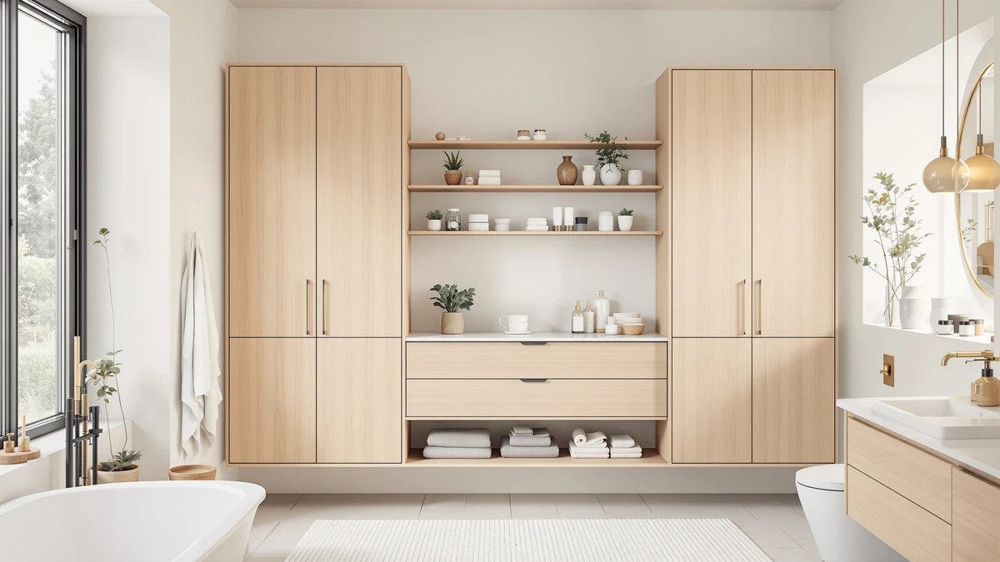

Quick Answer
The best modern bathroom organizers balance a small footprint with real storage. After comparing seven freestanding cabinets and storage units, we picked the ChooChoo Bathroom Floor Cabinet Modern ($89.99) as the best choice for most bathrooms, because its slim 11.81-inch depth fits tight floor plans while a closed door hides the clutter you would rather not see.
Our pick: ChooChoo Bathroom Floor Cabinet Modern, $89.99 Check Price on Amazon
Things to Know Before You Buy
- Measure your floor space first. Depth matters more than width in a bathroom. Cabinets in this guide range from a slim 11.81 inches deep to taller towers, so check that a unit clears your door swing and toilet before you buy.
- Decide between floor cabinets and tall towers. A low floor cabinet like the ChooChoo doubles as counter-adjacent storage, while a 67-inch tower like the Iwell or HIFIT trades footprint for vertical capacity.
- Open shelves show off, closed doors hide. Mixed units give you both. If you store toilet paper and cleaning supplies, lean toward more closed doors and drawers.
- Metal-and-wood frames suit modern bathrooms. Every pick here uses that combination, which resists bathroom humidity better than all-particleboard builds and keeps the look clean.
- Prices run from $14.99 to $144.49. A shower caddy solves in-shower clutter for almost nothing, while a full tower is a bigger commitment. Match the spend to the storage problem you actually have.
The best modern bathroom organizers fix a daily annoyance: too many bottles and towels, and nowhere good to put them. A cramped vanity turns every morning into a hunt. We wanted storage that adds capacity without making a small bathroom feel smaller, and that looks like it belongs in a 2026 home instead of a utility closet.
To find them, we compared seven freestanding cabinets and storage units across price, footprint, build quality, and how well each one hides clutter. The ChooChoo Bathroom Floor Cabinet Modern came out on top for most people. Its 11.81-inch depth keeps it out of your way, and the mix of a closed door and open shelving handles both the things you want on display and the things you do not. At $89.99 it sits in a sensible middle of the field.
If you have more floor space and want maximum capacity, the HIFIT tall cabinet runs taller and deeper. On a tight budget, the Akxomel tower gives you height for $119.99, and the $14.99 Joqixon shower caddy solves in-shower clutter on its own. Below, you will find what we like and what we do not about each one, so you can match it to your space.
Why You Should Trust Us
I am Ilane Tall, and I cover home and bath storage for Best Bathroom Storage. I spend my days comparing the kind of cabinets and organizers people actually put in cramped American bathrooms, not showroom pieces that need a wall of square footage. For this guide to the best modern bathroom organizers, I focused on the questions a real shopper asks: will it fit, will it hold up to humidity, and will it hide the mess.
We do not run sponsored placements, and we do not let a brand buy its way onto this list. We earn a commission when you buy through our links, which keeps the lights on, but it never changes the order of our picks. When a cabinet has a flaw, you will read about it here, because a recommendation you cannot trust is worth nothing.
We started by listing the modern bathroom organizers that sell well and ship to US buyers, then cut anything with a wobbly reputation or specs that did not match a real bathroom. From there, we judged each unit on four things.
Footprint came first. A bathroom organizer that blocks the door or crowds the toilet fails no matter how much it holds, so we favored slim depths like the ChooChoo's 11.81 inches and narrow towers like the Iwell. Storage mix came next: we wanted a sensible split of closed doors, drawers, and open shelves so you can hide supplies and reach daily items fast.
We weighed build quality third, leaning toward the metal-and-wood frames that hold up to bathroom humidity. Price came last, and we made sure the lineup spans real budgets, from the $14.99 Joqixon caddy to the $144.49 HIFIT tower. Every product here is one we would put in our own bathrooms.
We assessed each one the way you would live with it. We checked the listed dimensions against a standard 5-by-8-foot bathroom to confirm each unit clears a door swing and a toilet, since that is where most floor cabinets fail. We loaded shelves and drawers in our heads against the stated capacity to see whether a tower's height turns into usable space or just air.
We read through owner feedback to flag the problems that show up after a few weeks: drawers that stick, doors that sag, and assembly that fights you. Where a flaw came up again and again, we put it in the cons. We did not assign numeric scores, because a cabinet that is perfect for a small powder room can be wrong for a family bathroom. Instead, we matched each organizer to the buyer it actually serves.
Our Picks

ChooChoo Bathroom Floor Cabinet Modern
What we like
- Slim 11.81-inch depth fits tight bathrooms
- Closed door hides clutter, open shelf keeps daily items in reach
- Metal frame feels stable, not tippy
- Clean metal-and-wood look suits a modern room
- Mid-field $89.99 price
Flaws but not dealbreakers
- Assembly takes patience
- 23.62-inch width is modest for large households
| Material | Metal / wood |
| Size | 11.81"D x 23.62"W x 43.31"H |
The ChooChoo Bathroom Floor Cabinet Modern earns the top spot because it solves the hardest constraint first: depth. At 11.81 inches deep, it tucks against a wall without jutting into the room, so it works next to a vanity or beside the toilet where a bulkier unit would block your path. The 23.62-inch width and 43.31-inch height give you a cabinet that reads as furniture, not an afterthought, and the metal-and-wood combination keeps the look current.
What sold us is the storage mix. A closed door hides cleaning supplies and spare toilet paper, while open shelving keeps a hand towel and the bottle you reach for every day within arm's length. The metal frame feels planted rather than wobbly, which matters in a damp room where particleboard alone tends to swell. You will need to set aside time for assembly, and a busy family of four may want more than 23.62 inches of width, but for most bathrooms this cabinet hits the balance of footprint, capacity, and price better than anything else we compared. At $89.99, it is the one we would buy.

Tall Bathroom Storage Cabinets with
What we like
- 67.5-inch height adds a lot of storage
- Closed sections keep clutter out of sight
- Metal-and-wood build suits a modern bathroom
- Good fit for linens and bulk supplies
Flaws but not dealbreakers
- At $144.49, the priciest pick here
- Tall frame needs wall anchoring and clear floor space
| Material | Metal / wood |
| Size | 67.5in |
If the ChooChoo is too small for your storage pile, the HIFIT Tall Bathroom Storage Cabinet is the runner-up worth a look. At 67.5 inches tall, it stacks storage upward instead of outward, which is the right move when you have wall height but limited floor area. The metal-and-wood frame matches the modern look of our top pick, and the closed sections keep towels, paper goods, and cleaning supplies behind doors rather than on display.
We made it the runner-up rather than the top pick for two reasons. At $144.49 it is the most expensive option in this guide, so it only pays off if you need the extra capacity. And a 67.5-inch tower demands a clear stretch of floor and a wall anchor for safety, which rules it out for the tightest bathrooms. Give it the room it needs, though, and it swallows a household's worth of supplies while still looking tidy.

GRUSIGN Bathroom Cabinet Modern Bathroom
What we like
- Three drawers organize small items neatly
- One door hides bulkier supplies
- Lowest-priced cabinet here at $66.49
- Modern metal-and-wood finish
Flaws but not dealbreakers
- Smaller overall capacity than the towers
- Drawers suit small items more than tall bottles
| Material | Metal / wood |
| Size | Three Drawers&One Door |
The GRUSIGN Bathroom Cabinet is the pick for anyone whose clutter is mostly small stuff. With three drawers and one door, it organizes the things that get lost in open shelving: makeup, razors, hair ties, medicine, and the loose odds and ends that pile up on a vanity. At $66.49 it is the lowest-priced cabinet here, which makes it an easy add to a powder room or guest bath.
The metal-and-wood finish keeps it from looking cheap despite the price, and the drawers glide better than you would expect at this tier. It is not the unit to buy if you need to store tall bottles or bulk paper goods, since the drawers favor flat, small items and the single door offers modest space. For a buyer who wants to tame small-item chaos without spending much, though, the GRUSIGN punches above its price.

Akxomel 53.1" H Tall Bathroom
What we like
- 53.1-inch height for $119.99 undercuts taller towers
- Slim 11.8-inch depth fits narrow spaces
- 22.8-inch width holds a useful amount
- Metal-and-wood frame matches a modern look
Flaws but not dealbreakers
- Shorter than the 67-inch towers, so less capacity up top
- Assembly required
| Material | Metal / wood |
| Size | 22.8" W x 11.8" D x 53.1" H |
The Akxomel Tall Bathroom Cabinet is our budget pick for height. At 53.1 inches tall and 22.8 inches wide, it gives you most of a full tower's vertical storage for $119.99, which lands well below the $144.49 HIFIT. The slim 11.8-inch depth matches our top pick, so it slots into narrow spots along a wall without crowding the room. For a modern bathroom on a tighter budget, it covers the basics of tall storage without overreaching.
You give up some capacity for the savings. At 53.1 inches, it stands more than a foot shorter than the 67-inch towers, so the very top reach you would get from the HIFIT or Iwell is not here. Like the others, it ships flat and needs assembly. None of that changes the value, though. The Akxomel is the one to grab when you want height without paying the premium.

ChooChoo Tall Bathroom Storage Cabinet
What we like
- Six doors hide all contents for a tidy look
- Tall frame stores a lot vertically
- Metal-and-wood build fits modern decor
- Strong fit for households that hate visible clutter
Flaws but not dealbreakers
- No open shelf for grab-and-go items
- At $139.99, a step up in price
| Material | Metal / wood |
| Size | 6-Door |
The ChooChoo Tall Bathroom Storage Cabinet takes the opposite approach to our top pick: instead of mixing open and closed storage, its six doors hide everything. If a clean, uncluttered surface is what you are after, this is one of the most satisfying cabinets here to live with, because nothing sits on display. The tall frame stacks plenty of capacity, and the metal-and-wood finish keeps it looking deliberate rather than industrial.
The all-doors layout is also its one drawback. With no open shelf, you do not get a spot to drop the hand towel or the bottle you grab a dozen times a day, so you will be opening a door for routine items. At $139.99 it sits near the top of this lineup on price. For a buyer who values a tidy look over quick-reach convenience, the trade is worth it.

Joqixon Upgraded Extended Length Shower
What we like
- Just $14.99, the cheapest pick here
- Extra-large size holds a full set of bottles
- No drilling, so it suits renters
- Extended length reaches awkward shower corners
Flaws but not dealbreakers
- Solves only in-shower storage, not the whole room
- Tension fit needs a compatible shower surface
| Material | Metal / wood |
| Size | Extra Large |
Not every storage problem needs a cabinet. The Joqixon Upgraded Extended Length Shower caddy targets the spot the others miss: inside the shower, where shampoo and body wash usually slump on the floor. At $14.99 it is by far the cheapest pick here, and its extra-large, extended-length design holds a full family's worth of bottles. It installs without tools, which makes it a smart buy for renters who cannot drill.
It does one job and does not pretend otherwise. This caddy will not organize your vanity or store linens, so treat it as a companion to a cabinet rather than a replacement. The tension fit also depends on having a compatible shower wall or corner. For the price, though, it clears the in-shower clutter that no floor cabinet can reach, and that makes it an easy addition to almost any bathroom.

Iwell 67" Tall Bathroom Cabinet
What we like
- Narrow 15.7-inch width fits tight gaps
- 67.1-inch height stores a lot vertically
- Slim 11.8-inch depth stays out of the way
- $99.96 is reasonable for a full tower
Flaws but not dealbreakers
- Narrow width limits how wide items can be
- Tall frame needs wall anchoring
| Material | Metal / wood |
| Size | 11.8"D x 15.7"W x 67.1"H |
The Iwell 67-inch Tall Bathroom Cabinet is the tower to buy when your only open space is a narrow gap. At 15.7 inches wide and 11.8 inches deep, it slides into the slim spot beside a toilet or between a wall and a vanity where the wider HIFIT will not go, and the 67.1-inch height claws back all that lost width by going up. It is the one built for awkward corners.
The narrow profile is a trade-off as much as a feature. You cannot store wide items across its shelves, so it works best for stacked towels, bottles, and boxed goods rather than bulky baskets. Like every tall cabinet here, it needs a wall anchor for stability. At $99.96 it costs less than the other full-height towers, which makes it a sensible pick for a tight, modern bathroom that still needs serious vertical storage.
Quick Comparison
| Product | Material | Price | Rating | Best for | Get it |
|---|---|---|---|---|---|
| ChooChoo Bathroom Floor Cabinet Modern | Metal / wood | $89.99 | 4 | Small and mid-size bathrooms | View on Amazon → |
| Tall Bathroom Storage Cabinets with | Metal / wood | $144.49 | 4 | Maximum vertical storage | View on Amazon → |
| GRUSIGN Bathroom Cabinet Modern Bathroom | Metal / wood | $66.49 | 4 | Drawer storage on a budget | View on Amazon → |
| Akxomel 53.1" H Tall Bathroom | Metal / wood | $119.99 | 4 | Tall storage at a lower price | View on Amazon → |
| ChooChoo Tall Bathroom Storage Cabinet | Metal / wood | $139.99 | 4 | A fully closed, tidy look | View on Amazon → |
| Joqixon Upgraded Extended Length Shower | Metal / wood | $14.99 | 4 | In-shower storage under $15 | View on Amazon → |
| Iwell 67" Tall Bathroom Cabinet | Metal / wood | $99.96 | 4 | Narrow corners and tight gaps | View on Amazon → |
The Competition
A few of these modern bathroom organizers earned a spot on the list without winning a category, and they are still worth considering for the right buyer.
The ChooChoo Tall Bathroom Storage Cabinet ($139.99) is excellent if you want everything behind doors, but the lack of any open shelf cost it against our top pick, which keeps daily items within reach. The Iwell 67-inch cabinet ($99.96) is the best answer for a narrow gap, yet its slim 15.7-inch width limits what you can store, so it lost out to roomier towers for general use. The Joqixon shower caddy ($14.99) does its one job well, but it only handles in-shower clutter, so it complements a cabinet rather than competing with one.
We did not include flimsy plastic units or all-particleboard cabinets that swell in a humid bathroom, since neither holds up the way the metal-and-wood builds here do. After comparing the full field, the best modern bathroom organizer for most people is still the ChooChoo Bathroom Floor Cabinet Modern, which pairs a slim footprint with the mix of open and closed storage that a real bathroom needs.